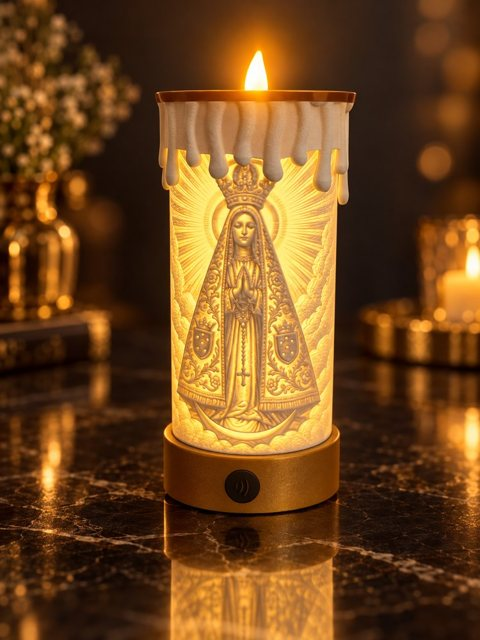
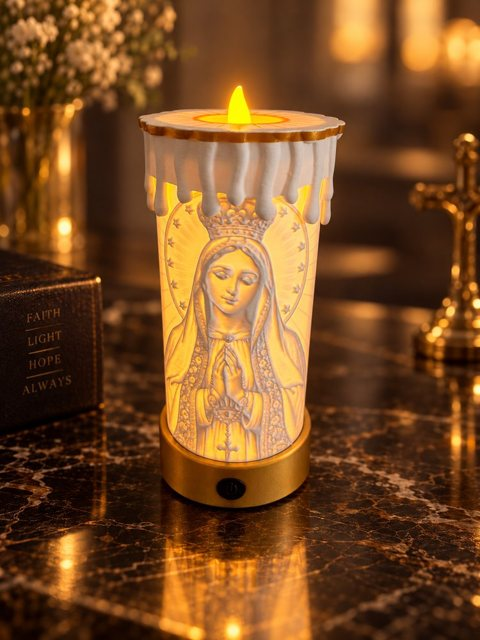
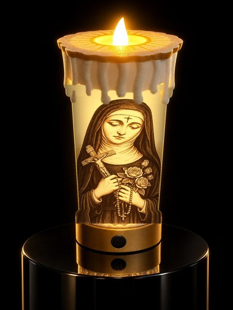
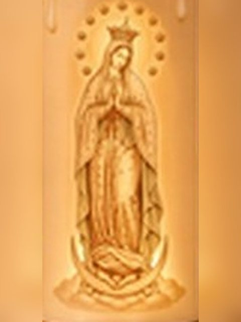
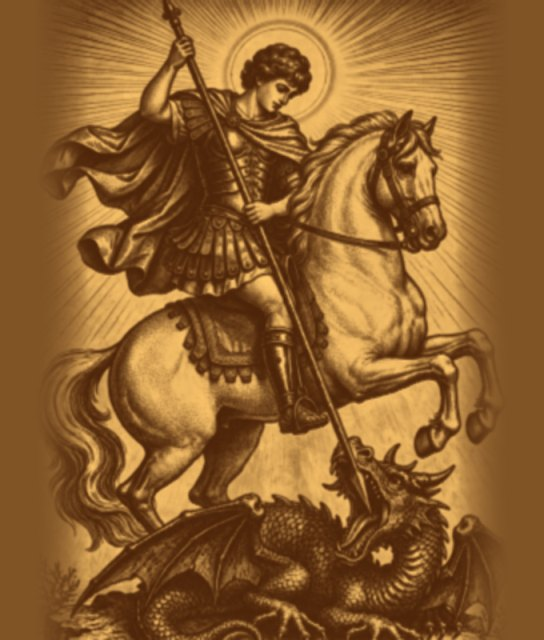
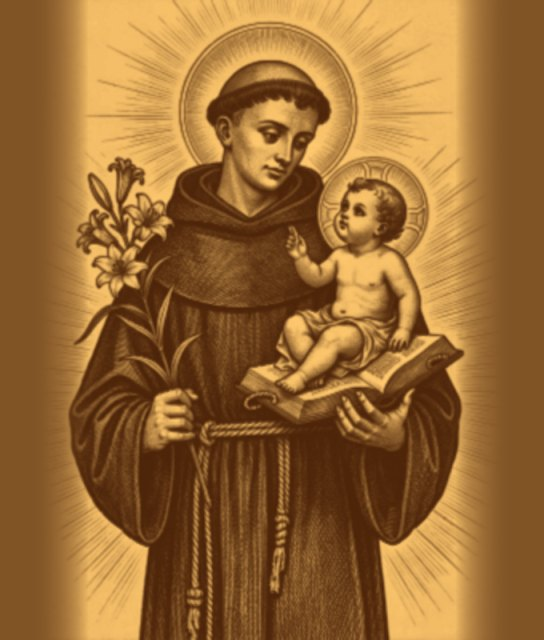
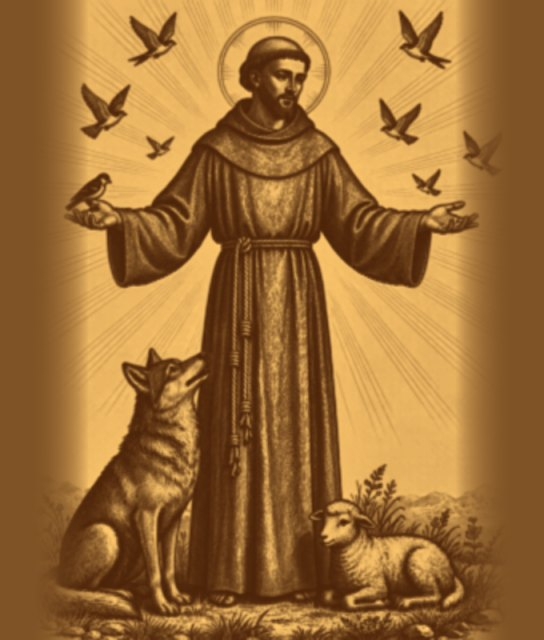

Linha de Fé

Nossa Senhora AparecidaLuz Eterna · R$ 210

Nossa Senhora de FátimaLuz Eterna · R$ 210
Nossa Senhora das GraçasLuz Eterna · R$ 210

Santa Rita de CássiaLuz Eterna · R$ 210

Nossa Senhora da ConceiçãoLuz Eterna · R$ 210

São JorgeLuz Eterna · R$ 210
São Judas TadeuLuz Eterna · R$ 210

Santo AntônioLuz Eterna · R$ 210

São Francisco de AssisLuz Eterna · R$ 210

Mãos em oraçãoLuz Eterna · R$ 210
Luminárias que rezam com você, feitas pela Fusão Lab 3D para a Fusão de Fé. Cada uma abre a sua página de oração.
Presenteie alguémUma Luz Eterna para quem você ama, com a página de oração dela. 5% de desconto na 1ª compra, já aplicado no link.
PRESENTEARVER TODAS NO SITE